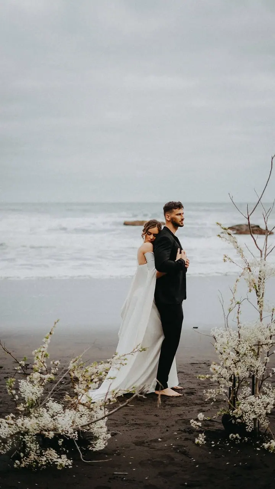
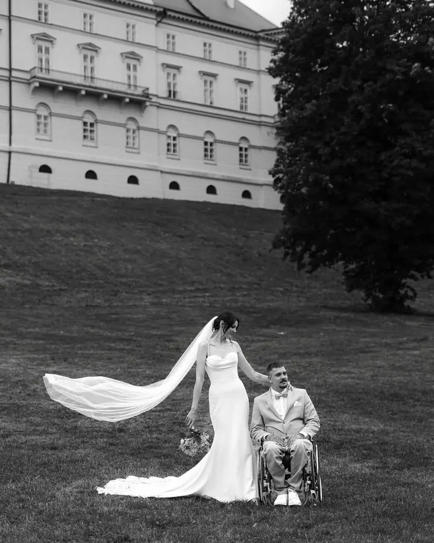

Svatby
Na svatbě se pohybuji tak, že mě skoro nevnímáte, a hledám opravdovost, energii a detaily, které dělají váš den jedinečným. Žádné strnulé pózy, ale příběh, ke kterému se budete vracet.





Jmenuji se Lena Volf a fotím svatby, rodiny a páry i ženy, které čekají miminko. Mám studio ve Znojmě, ale ráda za vámi přijedu kamkoliv. Nefotím pózy, fotím lidi a atmosféru mezi nimi.
Více o mně
„Miluju fotit lidi ve chvíli, kdy na sebe zapomenou.“
— Lena Volf
Na svatbě se pohybuji tak, že mě skoro nevnímáte, a hledám opravdovost, energii a detaily, které dělají váš den jedinečným. Žádné strnulé pózy, ale příběh, ke kterému se budete vracet.
Nejde o dokonalé úsměvy do objektivu, ale o to, co mezi vámi proudí. Fotíme přirozeně a v pohybu, u vás doma, v lese nebo na procházce.
Klidné focení v ateliéru nebo venku, kde je čas na doteky a pohledy. Fotky, které vám jednou připomenou, jak jste se na miminko těšili.
Nefotím proto, abyste vypadali líp, ale abyste se viděli tak, jak vás vidí lidé, kteří vás mají rádi. Autenticky, bez masky a bez hraní.
Jsem Lena. Fotím lidi, ne pózy. Každý člověk má v sobě něco, co stojí za to zachytit. Někdy je to klid, jindy chaos, něco divokého nebo něco tichého. Nefotím proto, abyste vypadali líp, ale abyste se na fotkách viděli tak, jak vás vidí lidé, kteří vás milují.
Miluji světlo, které si dělá, co chce, a momenty, které nejsou připravené. Nejraději fotím ve chvíli, kdy na sebe zapomenete: když se smějete, zíváte nebo se jen díváte z okna. Tam to začíná být pravdivé. Na lokaci přitom tolik nezáleží. Ať mě vezmete do města nebo do lesa, vždycky najdu něco, co stojí za zmáčknutí spouště.
Kromě focení miluji jídlo, dlouhé rozhovory, smích, který nejde zastavit, a kafe. A taky chvíle, kdy mi klienti napíšou, že se díky fotkám vidí jinak. Líp.
Jakmile se rozhodnete, vyplníte krátký formulář nebo si vyberete termín v rezervačním systému. Ozvu se vám co nejdřív.
Poznáme se, sladíme představy a probereme styl, lokaci i náladu fotek. Pošlu vám i moodboard s tipy na oblečení.
Povídáme si, ladíme náladu a mezitím fotíme. Všechno plyne přirozeně a já se postarám o to, abyste se cítili v pohodě.
Do tří týdnů dostanete finální upravené fotky v barevné i černobílé verzi v online galerii.
Nemějte obavy, všechno vám vysvětlím. Předem se domluvíme na stylu, lokaci i náladě fotek. Stačí dorazit s dobrou náladou, zbytek je na mně.
Něco, v čem se cítíte sami sebou. Ideálně tlumené tóny a přírodní barvy, bez výrazných vzorů a log. Před focením vám pošlu moodboard, který vám s výběrem pomůže.
Záleží na balíčku. U rodinného a párového focení je to 10 fotek za 2 500 Kč, 25 fotek za 3 800 Kč, nebo všechny povedené fotky (většinou 60 až 100) za 5 500 Kč. Vždy v barevné i černobílé verzi.
Ano. Ráda za vámi přijedu kamkoliv po Česku i dál. Cestu a případné ubytování řešíme individuálně.
foto@lenavolf.cz
Znojmo · Praha